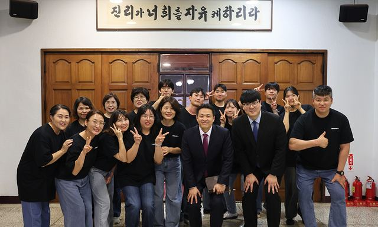

FAITH 공동체 > 중고등부 (Inheritors)
중고등부 (Inheritors)
Inheritors(인헤리터스) 중고등부
인헤리터스 중고등부는 그리스도의 것들로서 하나님의 약속의 유업(Inheritors)을 받을 공동체입니다.
"너희가 그리스도의 것이면 곧 아브라함의 자손이요 약속대로 유업을 이을 자니라" [갈3:29]
- 담당 교역자
- 이주영 전도사
- 부장
- 박현영 집사
Inheritors' WORSHIP 인헤리터스 중고등부 예배

- 대상
- 중고등학생 [중1학년 - 고3학년]
- 시간
- 주일 오전 11시
- 장소
- 교육관 5층 중고등부 예배실
Inheritors' Vision 인헤리터스 중고등부 비전
매일 말씀을 마음에 품고, 그 말씀의 능력으로 나와 이웃의 삶을 변화시켜 나가기를 원합니다.
오직 예수님만을 삶의 최고의 기쁨이자 영광으로 고백하려 힘쓰고 있습니다.
Inheritors' EVENT 인헤리터스 중고등부 활동
주일공과 [매 주일]
지난 주에 들었던 말씀을 되새기고, 한 주동안 묵상할 말씀을 나눕니다.
찬양기도회 [5주차가 있는 주일]
서로를 위하여 함께 찬양하며 기도합니다.
수련회 [연 2회 (하계, 동계)]
말씀과 기도로 영성을 수련하고, 예배를 통해 하나님의 은혜를 체험하며, 찬양을 통해 결단합니다.